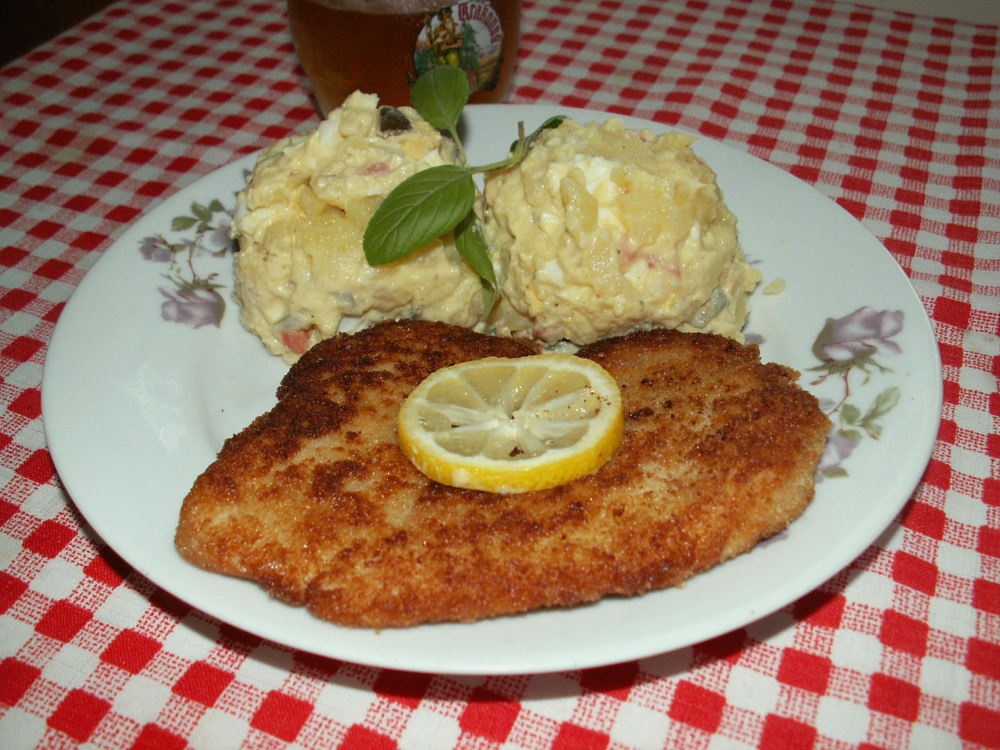

Kuřecí řízek s bramborovou kaší

Description:
Smažený kuřecí řízek v trojobalu je oblíbená česká klasika. Můžete si ho vzít s
sebou na výlet, nebo si ho dát k nedělnímu obědu. Pochutnejte si na něm s jemnou
bramborovou kaší a zeleninovou přílohou.
Ingredients:
- kuřecí řízky
- sůl
- pepř
- 2 vajíčka
- hladká mouka
- strouhanka
- ztužený tuk
- brambory
- máslo
- 1 hrnek mléka
Steps
- Kuřecí řízek (nejlépe chlazený) opláchneme, naklepeme, osolíme a obalíme nejdříve v hladké mouce, potom v rozšlehaném vajíčku a nakonec ve strouhance.
- Na rozpáleném tuku smažíme řízky po obou stranách.
- Na bramborovou kaši uvaříme hodně doměkka oloupané brambory. Po uvaření z nich slijeme vodu a nasypeme je do připraveného robota.
- K bramborám přidáme dva plátky másla nebo Ramy, osolíme, přilijeme hrnek horkého mléka a rozmixujeme. Pokud bychom použili studené mléko, tak se brambory mixují, ale nenašlehají.
- Jako přílohu jsem lehce osmažíme mraženou zeleninu (například s kukuřicí a lusky).